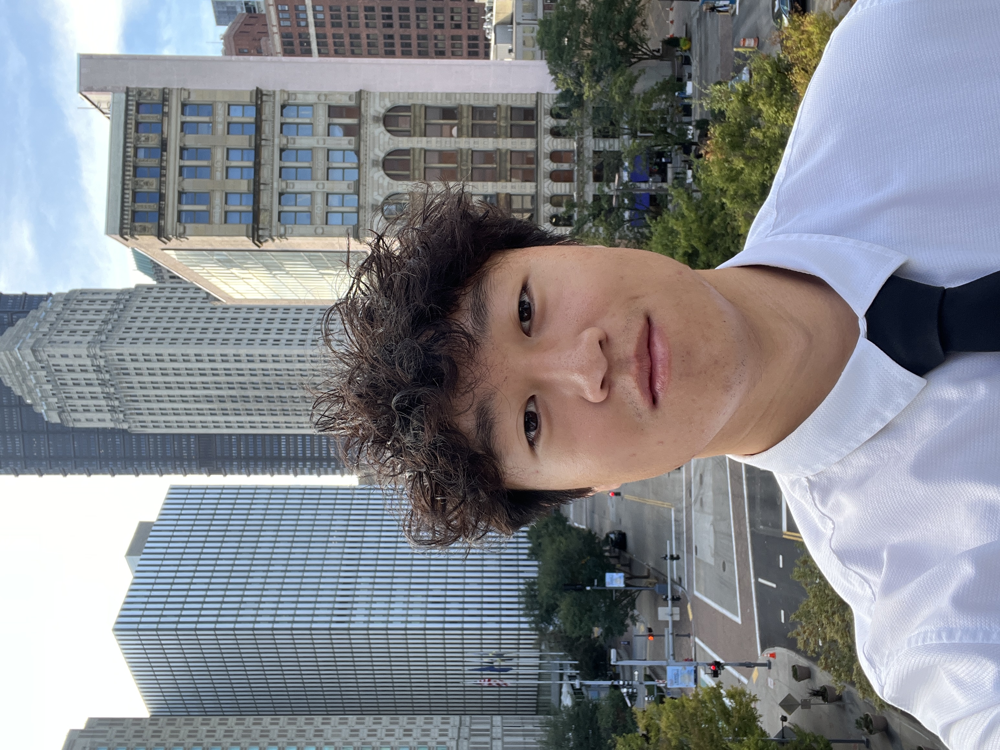

Homepage
Hello and welcome to my website! I'm Henrik Nguyen. I'm currently in my third year of Mechanical Engineering at the University of Colorado Boulder, with a minor in Engineering Management. This website aims to give a general overview of who I am, what interests me, and what I have in mind for my future as an engineer.
Not only was this website created for class purposes, but it can also be the start of my professional portfolio. Through it, everyone from my professors, potential employers, fellow students, and anyone who wants to learn more about me and my projects can find out more information about me and my achievements so far. This will continue to expand and include my works in engineering, project pages, and pictures of my growth as I continue to update and work on the website. So this section could drastically change as currently it is just built off of the assignment details and requirements.
It is important to me that everyone who comes to my website will know that I am a person that loves being an engineer and loves learning from failure through projects and work. I value learning, growth, and putting in my best effort in everything I do.
Bio

Hello! My name is Henrik Nguyen and I am a junior majoring in Mechanical Engineering at CU Boulder. I love doing hands on work combined with CAD designing to go from ideas into physical builds. I am interested in applying the things that I learn into real world engineering would like to have a career in aerospace, defense, or robotics after I graduate.
Engineering has always been a passion of mine since my early school years because I loved to take apart things and explore the way they work. I like solving problems and understanding how things work so engineering just felt right for me. My CAD class in high school was what really widened the doors for me. Being able to design something and then use the designs and drawings to create something physical was almost like magic for me, especially with 3D printing technology that came out that year too. I was certain that I wanted to continue designing and making anything and everything.
In that class, we started off by making wooden gear cars and learning about electronics and gear ratios. Then we made large trebuchets after learning physics. Since then, college has allowed me to learn more about these ideas and make projects like drill-powered bikes, that hauled 917 pounds up a icy hill, 3D printed windmills, and model based wobbler engines. Next summer, I am planning to intern at Mead & Hunt where I will have the title of Mechanical Engineering Intern. In this role, I will learn more about building systems such as HVAC while collaborating with engineers from different disciplines to work in spaces for projects like military, airport, and architecture.
My future plans are to finish my undergraduate program in Mechanical Engineering, while also being in the BAM Master's program. Then becoming a professional engineer. I am eager to learn more from projects and internships, then hopefully find a career path that I love. What excites me the most about engineering is the creativity and approaches to solving problems. Even when problems have a single correct answer, there are many ways to approach them. Being able to design, iterate, and improve solutions is what makes the work interesting to me, and I hope that I can have a job where I can have creative freedom to improve whatever it is that I make.
Major / Minor
Mechanical Engineering with a minor in Engineering Management
Current Stage
Junior at CU Boulder and planning to continue into the BAM program
Upcoming Internship
Mechanical Engineering Intern at Mead & Hunt
Career Interests
Aerospace, defense, and possibly robotics